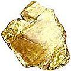

Bem-vindo à CuraDente!
Um site que ensina maneiras simples, naturais e de baixo custo para que nos tornemos independentes de dentistas
Ao encontrar esse site, você encontrou o equivalente a um livro inteiro e abrangente sobre as causas e curas naturais não tóxicas e poderosas contra cárie dentária e doença gengival, disponível a você sem custo.
Se você estiver com pressa e desejar saber alguma informação mais importante em primeiro lugar, as quatro páginas desse sítio que considero de “leitura obrigatória”, ou seja, as mais essenciais em termo de ajuda para prevenir sofrimentos dentários e (até mais) danos aos seus dentes e gengivas são as seguintes:
- Perfuração & obturação de dentes: uma escolha imprudente? Sobre riscos, danos e perigos, como também inúmeras razões para se evitar o tratamento dentário convencional invasivo
- Bochechar e escovar os dentes com o açúcar xilitol pode parar a formação de cárie e curar periodontite/doença da gengiva
- Minha melhor cura pessoal para dor de dente: Enxagues com salmoura morna & pacotes de sal
- Transporte do fluido dentinal - teoria revolucionária sobre resistência natural à cárie e cariogênese: Pesquisa dos Drs. Steinman & Leonora pressupõe a resistência do hospedeiro como mais importante que as bactérias como causa primordial de deterioração dentária.
E se você tiver “coragem” ou estiver pronto a expandir seus horizontes (seja qual for o caso), leia também a importante informação de cura dentária em
Subsequentemente, se você deseja aprender sobre o assunto e começar a implementar um grande número de maneiras para prevenir dano futuro aos seus dentes e gengivas ou àqueles dos seus filhos, assegure-se de ler todas as seções importantes desse sítio, como mostradas no menu acima, com especial ênfase às páginas sobre Nutrição, mas sem negligenciar as outras, já que embora o alimento e a dieta sejam tipicamente de maior impacto na saúde dentária, eles não são os únicos fatores que importam para a saúde e doença dental e bucal.
Sinta-se à vontade para examinar as seguintes seções principais do site com muitas dúzias de meios naturais para ajudar dentes e gengivas, como também informações detalhadas sobre o porquê de o tratamento dentário convencional poder não ser a escolha mais sábia, se você quiser preservar seus dentes e gengivas.
Por último, mas não menos importante, ao ler e possivelmente aplicar ou experimentar a informação (continuamente em expansão) aqui apresentada, lembre-se de que cada pessoa é um indivíduo único, portanto observe suas reações e adapte e/ou continue de acordo com o que observou (e antes de embarcarmos, assegure-se de que você compreende sua responsabilidade para com sua saúde dentária e geral, ao ler a Renúncia de responsabilidade desse site).
Principais seções de CuraDente
Natural: A Maneira de a Natureza Conservar e Curar Dentes & Gengivas
Sobre nutrição, cuidados dentários atóxicos/não químicos, regeneração & rebrota de dentes e gengivas, desintoxicação oral, remédios caseiros para dor de dente & outros desafios dentários. Com impressionantes testemunhos de cura.
Holística: saúde e cura de dentes e você inteiro
Até mesmo os desafios dentários podem ser tratados e curados de um ângulo além do meramente físico (ou complementar): sobre modos e tratamentos auto-curadores envolvendo abordagens energéticas, emocionais e espirituais.
Convencional: arsenal terapêutico da odontologia moderna
Sobre as “bênçãos” do tratamento dentário lucrativo e convencional e como elas podem afetar sua saúde dental e geral e o seu bolso (sem mencionar a aparência).
Recursos: base de conhecimentos e produtos
Explore essa seção para conhecer mais tratamentos naturais para os dentes, cuidados, recursos de cura e educacionais, inclusive livros, vídeos e produtos remineralizantes.

CuraDente: como você pode apoiar esse site humanitário gratuito
7 maneiras fáceis para ajudar neste site